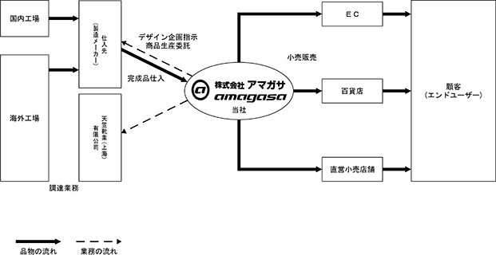
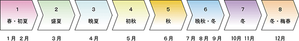
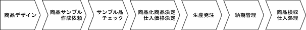

(注) １．第30期の潜在株式調整後１株当たり当期純利益については、１株当たり当期純損失であり、また、潜在株式が存在しないため記載しておりません。また、第31期、第32期、第33期及び第34期の潜在株式調整後１株当たり当期純利益については、潜在株式は存在するものの、１株当たり当期純損失であるため記載しておりません。
２．自己資本利益率及び株価収益率については、親会社株主に帰属する当期純損失(△)が計上されているため、記載しておりません。
３．従業員数は、役員を除く期末就業人員数であります。
４．従業員数欄の( )は、外書きにて臨時雇用者数の年間平均雇用人員であります。
５．「収益認識に関する会計基準」（企業会計基準第29号 2020年３月31日）等を第33期の期首から適用しており、第33期以降に係る主要な経営指標等については、当該会計基準等を適用した後の指標等となっております。
(注) １．第30期の潜在株式調整後１株当たり当期純利益については、１株当たり当期純損失であり、また、潜在株式が存在しないため記載しておりません。また、第31期、第32期、第33期及び第34期の潜在株式調整後１株当たり当期純利益については、潜在株式は存在するものの、１株当たり当期純損失であるため記載しておりません。
２．自己資本利益率、株価収益率及び配当性向については、当期純損失(△)が計上されているため、記載しておりません。
３．従業員数は、役員を除く期末就業人員数であります。
４．従業員数欄の( )は、外書きにて臨時雇用者数の年間平均雇用人員であります。
５．最高株価及び最低株価は、2022年４月４日より東京証券取引所グロース市場におけるものであり、それ以前は東京証券取引所ＪＡＳＤＡＱ（グロース）におけるものであります。
６．「収益認識に関する会計基準」（企業会計基準第29号 2020年３月31日）等を第33期の期首から適用しており、第33期以降に係る主要な経営指標等については、当該会計基準等を適用した後の指標等となっております。
1974年４月、天笠悦藏が東京都台東区今戸に、当社の前身となるアマガサ商店を創業し、婦人靴の卸売を主たる業務として営業を開始いたしました。その後の推移については以下のとおりであります。
当社グループ(当社及び当社の関係会社)の主たる事業は、当社(株式会社アマガサ)及び子会社(天笠靴業(上海)有限公司)により構成されており、20代から30代の女性向けに、ノンレザー素材(合成皮革と呼ばれるケミカル素材だけに限らず、人工皮革、合成繊維、布地、その他雑材など天然皮革以外の素材の総称)を用いたカジュアル婦人靴のデザイン・企画、小売販売を行っております。
当社グループの主たる取扱商品は、「JELLY BEANS」(ジェリービーンズ)を中心とした、オリジナルブランドを冠したノンレザー婦人靴であります。いずれの商品も、おしゃれに特に関心が高いといわれる20代から30代の女性をコアターゲットに定め、若年女性に特化した商品の企画・開発を進め、百貨店等の取引先店頭や直営店舗、ＷＥＢ販売等の販売チャネルを通じ、消費者に販売しております。
当社は、自社オリジナルブランドを冠したノンレザー婦人靴の小売販売を行っております。
商品は、百貨店等の取引先店頭や直営小売店舗での一般消費者を対象にした小売販売に加え、ＷＥＢ通販による販売を行っております。
なお、靴専門店等の取引先を対象にした卸売事業からは前連結会計年度において撤退しており、一部の取引先と取引が継続しているものの金額的重要性が乏しくなったため、当連結会計年度より小売事業に含めております。詳細は、「第５ 経理の状況 １ 連結財務諸表等 (1) 連結財務諸表 注記事項（セグメント情報等）」をご参照ください。
また、中国国内における商材の調達を主たる目的として2009年７月に設立した天笠靴業(上海)有限公司は、中国の仕入先からの供給ルートが安定したこと等により清算手続き中であります。
［事業系統図］

［セグメント別売上構成比］
当社グループの主たる取扱商品は、ノンレザー素材を使用したカジュアル婦人靴であります。
ノンレザー素材を使用した商品は、皮革素材を使用した場合に比べ素材コストが低く製造コストが抑えられるため、販売価格を低目に設定できることに加え、素材の加工が容易であるため多彩なデザインを表現できることや手入れが簡単であるなどの特徴があります。(東京都靴卸協同組合 調べ)
商品は、１年を８シーズンに区分し、年間で約21万足相当(2024年１月期当社実績)を販売しております。商品構成につきましては、①商品開発部門でデザイン・企画したものを取引メーカーに生産委託した商品(オリジナル商品)、②メーカーの提案商品にアレンジを加えた商品(アレンジ商品)、③メーカー提案商品の中から選別した商品(セレクト商品)となっております。ベーシックなアイテムから季節と流行に合わせたもの、また、流行を先取りしたものと様々な商品をブランドごとに提供しております。

商品は、いずれのブランドも20代から30代の女性をコアターゲットに設定し商品開発を行っており、実購買層は20代から30代の女性であります(当社店頭調べ)。それぞれのブランドのコンセプトに基づき、女性のライフスタイルに合致するような商品の開発を主眼において商品づくりに努めております。
コアターゲット層である20代から30代の女性達は世間の流行から大きく外れることを好まない反面、他人との差別化や、自分らしさを表現できる商品を好む傾向が強く、「流行の枠内に収まりつつも各自の個性を発揮できるアイテムを求めている世代である」と認識しております。
このようなターゲットユーザーの深層心理を踏まえ、「他とは少しだけ違う」という、顧客のおしゃれ心を満たす商品の具現化に努め、有限会社天笠時より商品開発部門を自社内に設け、自社による商品デザイン企画体制の確立を図っております。
仕入先メーカーの協力を得て、当社グループの意図した商品が具現化できることにより、顧客ニーズに沿った微妙なデザインアレンジを反映した多種多様な商品を開発し、それら商品の迅速かつ戦略的な市場投入を実行しております。
デザイナーは、商品企画を担当し、デザインから使用素材の決定、サンプル品のチェック、商品化の決定までを担当しております。
マーチャンダイザーは、市場の動きに合わせフレキシブルにアイテムの追加・軌道修正や、展示会等の取引先評価を勘案しバリエーション幅を決定する等、商品化されたアイテムの調整を行い、効率的な商品展開を図る業務を行っております。
いずれのスタッフも定期的に直営店等の店頭に立ちトレンドの分析、自社商品の評価、売れ筋商品の検証等、実際に売り場での接客やリサーチを通じエンドユーザーの生の声や市場の動向から「現在及び今後どのような商品を消費者は求めているのか」を把握するよう努め、また、それを反映させた商品づくりに取り組んでおります。
当社グループは、商品の自社生産をせず、商品開発部門にてデザイン・企画したものを国内外の靴メーカーへ委託し生産された完成商品を仕入れるファブレス方式をとっております。
近年におけるファッションの流行の変化は非常に速く、短期間で変化している状況を踏まえ、「商品の有効期限」を意識し、「適時・適品」の徹底に努め、最新の流行を反映した商品が流行遅れになる前にスピーディーに店頭に供給することを第一としております。
現在、国内商品のデザイン・企画から商品化を経て取引先に納品するまで、新商品の場合35日、リピート商品の場合20日というリードタイムで行っております。このようなリードタイムの実現は、仕入先(製造メーカー)と協力関係を築き、品質面、技術面、物流面において高水準な商品を安定的な生産力をもった特定メーカー数社より仕入れることにより実現しております。
また、インポート商品に関しては従来国内仕入先を介した間接仕入れの方法によっておりましたが、近年の中国における製靴技術の進歩に鑑み、現地法人天笠靴業(上海)有限公司を設立し、原価率の一層の低減を目的とした直接仕入れを積極的に行っておりました。なお、中国の仕入先からの供給ルートが安定したこと等により、天笠靴業(上海)有限公司を清算手続き中であります。
商品の仕入工程は、次のとおりであります。

商品の販売につきましては、百貨店、インターネット及び直営店での小売販売を行っております。
販売取引先は、百貨店及び通信販売会社等でありますが、直営店やインターネットによる通信販売を通じてエンドユーザーに対し直接販売も行っております。
(注)１．議決権の所有割合については出資比率を記載しております。
２．天笠靴業（上海）有限公司は清算手続き中であります。
2024年１月31日現在
(注) １．従業員数は役員を除く就業人員であります。
２．従業員数の欄の( )内の数字は、外数で臨時雇用者の年間平均雇用人員であります。
３．平均臨時雇用者数は、月間所定労働時間により換算しております。
４．全社(共通)として記載されている従業員数は、特定のセグメントに区分できない管理部門に所属しているものであります。
５．前連結会計年度末に比べ従業員数が8名減少しておりますが、その主な理由は直営店舗の閉店によるもの及び通常の自己都合退職によるものであります。
2024年１月31日現在
(注) １．従業員数は役員を除く就業人員であります。
２．平均年間給与は、賞与及び基準外賃金を含んでおります。
３．従業員数の欄の( )内の数字は、外数で臨時雇用者の年間平均雇用人員であります。
４．平均臨時雇用者数は、月間所定労働時間により換算しております。
５．前事業年度末に比べ従業員数が8名減少しておりますが、その主な理由は直営店舗の閉店によるもの及び通常の自己都合退職によるものであります。
労働組合は結成されておりませんが、労使関係は円満に推移しております。